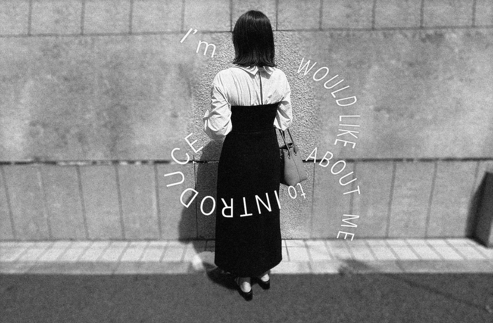

私について
ABOUT
村井 友希 - Yuki Murai
高等学校卒業後、事務・接客・ネイリストと経験を積むことで自分の好きなことを仕事にしたいと思い転職を決意。2023年4月よりWebデザインの勉強を始め、広告代理店にてWebデザイナーとして2年3ヶ月の実務に従事しました。趣味はアニメを観ること、漫画を読むこと、ゲームをすること、食べることです。クリエイティブなことが大好きで、たくさんの制作物を作っていきたいです。


UNTIL NOW
現在に至るまで
-
イラストやアニメが好きな幼少期
幼少期からアニメが大好きで、ジャンルを問わず毎日アニメを見てました。絵を描くことも好きで特に似顔絵やアニメのキャラクターを描くことが好きでした。
-
一般事務職へ就職
高等学校を卒業しPC作業が好きだったことから一般事務職へ就職し正確さ・スピードを意識し、円滑に業務を行えるよう心掛けました。
-
接客業へ転職
カフェでの接客業へ転職。日々お客さまと接する中でコミュニケーション力を磨くことができました。ドリンクやフードを”作る”ことが楽しくやりがいを感じていました。
-
美容サービス業へ転職
コロナ禍をきっかけに手に職をつけたいと思い半年間スクールでネイルを学び、ネイリストへ転職。施術を進めながら短い時間でのタスク管理とヒアリング力を培うことができました。
-
一般事務へ転職
ネイリストのお仕事を通して”デザイン”をすることが好きで仕事にしたと思い始めWebデザインを知り、目指すためPCに使い慣れていたいと思いもう一度一般事務として派遣。
-
職業訓練校へ入校
契約期間の満了を機にWebデザイナーを目指すことを決意。Web職業訓練校(中央キャリアアップアカデミー)へ入学し、本格的にWebデザインの勉強を始める。
-
Webデザイナーとして広告代理店に入社
卒業後、Webデザイナーとして広告代理店に入社。主に動画編集やバナー制作に携わる。クリエイティブの力でビジネス課題を解決すべく、常にコンバージョンを意識した戦略的な視点を持ったデザイン体現を心がけています。
STRENGTHS
わたしの強み
-
Curious
(好奇心旺盛)
幼い頃から流行りやトレンドに敏感で、常に興味を持っていました。流行りの移り変わりが激しいWeb業界においても、トレンドのデザインや新しいことはどんどんインプットし挑戦することで、アウトプットできるよう努めます。
-
Action
(行動力)
現状を把握し何をするべきか考え、現実的に行動することを心がけております。ネイル業の経験をきっかけに、目的を達成するためへの課題発見力・行動力を培うことができました。Webデザインのお仕事も同様に常に新しい課題を持つことで自身のアップデートをし続け、貪欲に取り組むよう努めてまいります。
-
Communication
(コミュニケーション)
コミュニケーションの場では、1対１や集団問わず良好な関係を築くよう心がけております。前職ではお客さまと接する中で求めている事を第一に考え、行動・提案をする事で結果に繋がりました。この経験で培った強みを、クライアントさまや職場のメンバーとの円滑なコミュニケーションに貢献します。
VISION
ビジョン
ネイル業界で培ったトレンドをキャッチアップする力、お客さまへのヒアリング力を活かし、Webを通しお客さまとユーザーを繋ぐ橋渡しをしたいです。 メンテナンス性を意識しながらも、見る人の心を動かしワクワクするデザインを作っていきたいです。 新しい技術を取り入れることを忘れずに日々精進していく所存です。